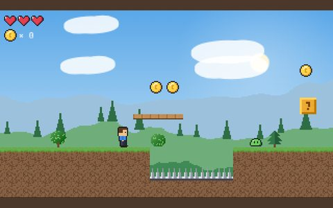
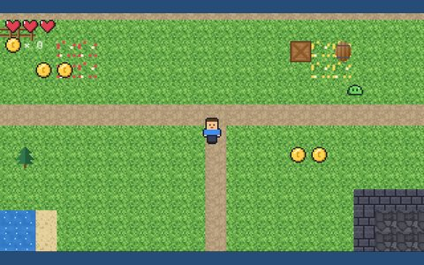
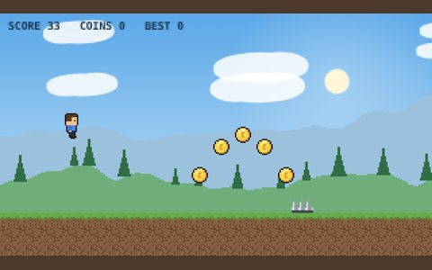
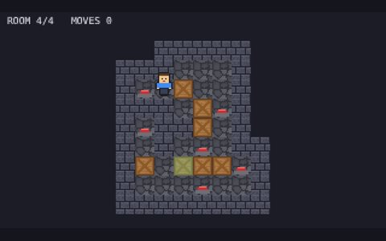
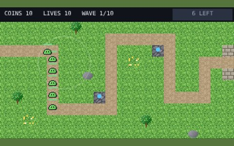
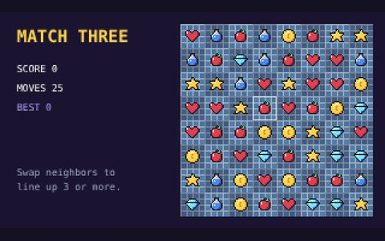
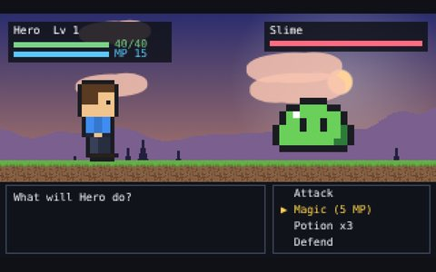
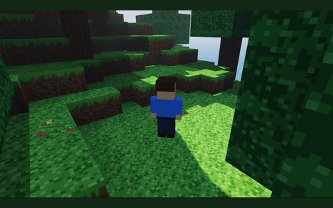

Platformer
Ledges, spikes, a ladder, stompable slimes, a bat, a spring, a key, a locked door and a flag.
2dscene editor
Templates
Eight finished little games to copy and change. Each one uses the tile, sprite and character library, and the ones with characters use the first character you saved in the character designer.
Copy a folder: cp -r templates/runner my-game, then change ../../engine/ in its index.html if you move it to another depth.
Open the level in the scene editor, change it, press Play. The code is 10 lines: load scene.json, call runScene.

Ledges, spikes, a ladder, stompable slimes, a bat, a spring, a key, a locked door and a flag.

A village with villagers to talk to, a pond, roaming slimes and a dungeon behind a locked door.
One main.js each, with the rules in small tables at the top so you can rebalance without reading everything.

The world scrolls, you jump. Speeds up over time, coin arcs, best score saved.

Push crates onto buttons in four rooms. Undo, move counter, levels drawn as text.



Attack, magic, potions and defend against five monsters in a row. A clear state machine.

Find ten crystals on a block island in third person, with your own designed character.